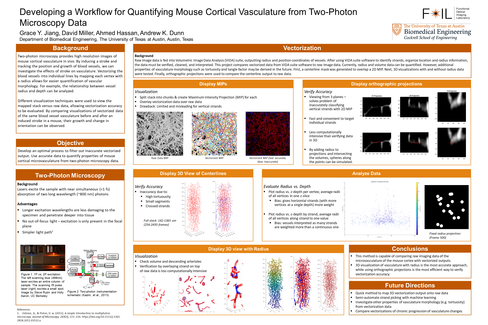

Skip to section:
Grace Jiang
Welcome! I live in the Bay Area.
EE Projects
2025
2024
2023
- Transimpedance Amplifiers — notes on design, gain-bandwidth, and noise optimization.
2021
- Things to know about USB-C — Type-C architectures, design considerations, etc.
Misc Projects
2025

Practiced welding and metalworking by helping out with the Flaming Lotus Girls
2021
Rubens Tube — a tube of gas but with high ratio of (how cool it looks/effort required) was large.
Future ideas:
• Multiple tubes of differing lengths to make standing waves at diff frequencies
• Circular tube
• 2D array of holes inspired by Veritasium video
• Glass tubes
• Somehow trigger release of sodium etc to make colored flames based on frequency
Future ideas:
• Multiple tubes of differing lengths to make standing waves at diff frequencies
• Circular tube
• 2D array of holes inspired by Veritasium video
• Glass tubes
• Somehow trigger release of sodium etc to make colored flames based on frequency
2018

MasSpec Pen — a handheld mass spectrometry tool for rapid tissue analysis.
Wikipedia |
Patent US20250251323A1
2018

Visualizing 2-photon microscopy data in a new way
Hiking
- Recent trip: Add trail or peak name…
- Routes: Link to GPX/KML or CalTopo maps.
- Photos: Add a gallery link or album.
Reading
- Currently: Add a book/article here…
- Notes: Link to a note file or external doc.
- Archive: Past reading lists.
About
One paragraph about you. Keep it friendly and concrete. Add a contact line like grace [at] example [dot] com or a contact form on a separate page later.